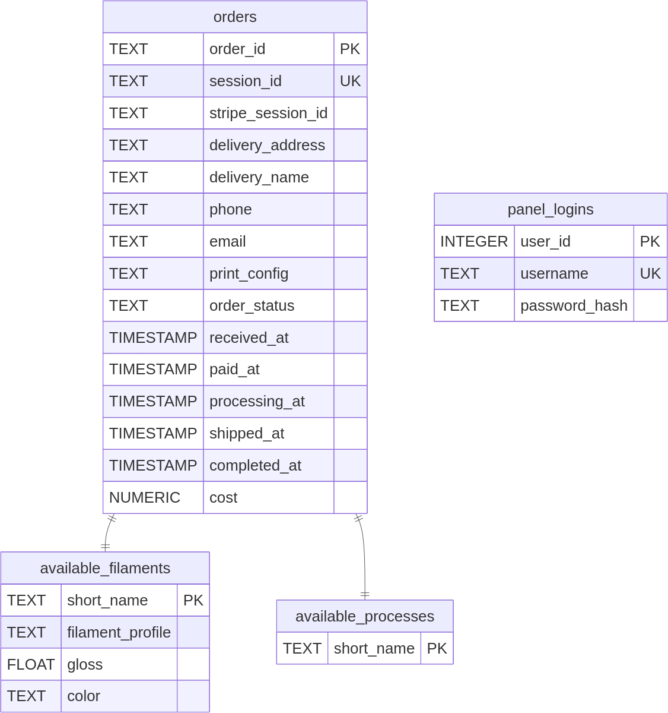

Web-based System for Ordering and Managing 3D Prints
Bachelor's Thesis
Zehra Irem Kuyucu, ITVfu-21
Vilnius, 2025Problems Addressed
- Monetize 3D printers.
- Automate 3D print order workflows.
Tasks Performed
- Analysis of existing solutions, the market and relevant tech.
- Requirement and use case analysis.
- System development.
- System documentation.
- System testing.
System Architecture
System Components
Database Schema
Languages and Frameworks Used
- Go for the backend
- Vue.js and TypeScript for the frontend
- WebGL for visualizations
System Features
Implemented based on the requirements.
Automated print evaluation and pricing
STL and G-code Previews
Payment via Stripe
Order Management
Email Notifications
Inventory Management
Conclusions
Key Achievements
- Streamlined Workflow: Automated file validation, parameter adjustment, slicing, and cost estimation.
- Enhanced User Experience: Intuitive web interface with real-time 3D model visualization.
- Improved Efficiency: Automated workflow management and integrated inventory control.
- Flexible & Future-Proof: Supports various printer models (initially Bambu Lab focused) and slicers (e.g., Bambu Studio, Orca Slicer).
Future Directions:
- Expand payment gateway options and file format support.
- Introduce advanced configuration options (infill, user comments), multi-object/plate support, customer accounts, multi-printer/inventory management for print farms, and caching of sliced files.
- Implement a robust automated testing framework.
Thank you for listening.